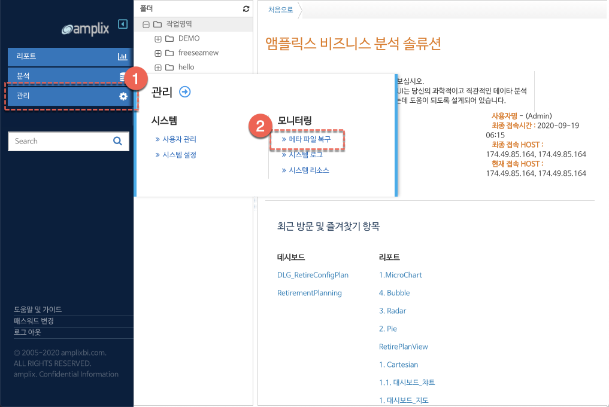
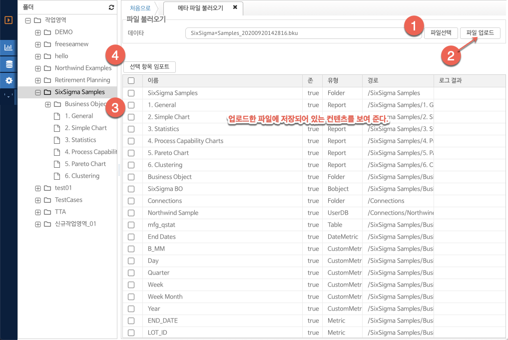

네비게이션
3.2.1. 메타 파일 복구
메타 파일 복구를 통해 백업한 리포트 및 비즈니스 오브젝트 항목을 다른 시스템 혹은 현재 시스템에 복구하는 기능을 제공한다.
메인 메뉴의 관리 -> 모니터링 서브 메뉴의 메타 파일 복구 항목을 클릭한다. 메타 파일의 생성은 "4.2 폴더관리" 메타 파일 생성 부분을 참조한다.

(그림 : 메타 파일 복구 메뉴 접근 단계)
메타 파일 복구 화면 레이아웃 구성 및 사용방법은 다음과 같다.

(그림 : 메타 파일 복구 화면 레이아웃 구성)
1. 파일 선택 - 버튼을 클릭하여 백업한 bku 확장자 파일을 선택한다.
2. 파일 업로드 - 파일을 서버에 업로드하여 파일의 컨텐츠를 검증하고 정상적인 경우 하단 그리드에 파일에 저장되어 있는 컨텐츠의 목록을 보여준다.
3. 백업 파일 그리드 - 그리드의 체크 버튼을 선택하여 복구하고자 하는 컨텐츠를 선택한다. 전체 내용을 복구하려면 그리드 헤더의 체크 버튼을 클릭한다.
4. 선택 항목 임포트 - 체크 선택된 백업 파일 컨텐츠를 복구 / 기존 파일이 없는 경우 생성, 하여 서버에 반영한다.